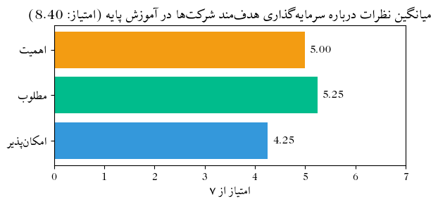
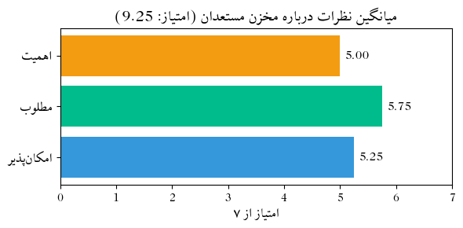
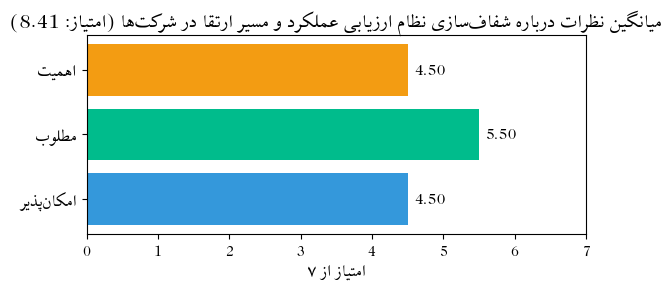
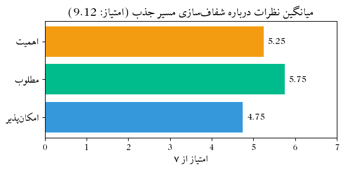
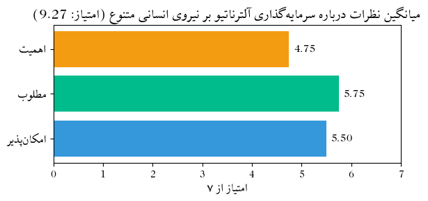
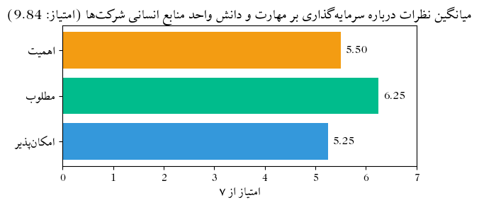
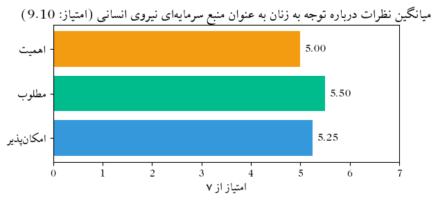

import pandas as pdimport matplotlib.pyplot as pltfrom matplotlib import font_manager, rcimport arabic_reshaperfrom bidi.algorithm import get_displayfrom IPython.display import MarkdownCOLORS = {"danger": "#e74c3c","warning": "#f39c12","primary": "#375a7f","info": "#3498db","success": "#00bc8c","secondary": "#444","light": "#adb5bd","dark": "#303030"}# تنظیم فونت فارسیfont_path ="fonts/xb-zar/Zar/XB Zar.ttf"# مسیر فونت # مسیر فونت فارسیprop = font_manager.FontProperties(fname=font_path)rc('font', family=prop.get_name())QUESTIONS = [ "سرمایهگذاری هدفمند شرکتها در آموزش پایه","مخزن مستعدان","شفافسازی نظام ارزیابی عملکرد و مسیر ارتقا در شرکتها","شفافسازی مسیر جذب","سرمایهگذاری آلترناتیو بر نیروی انسانی متنوع","سرمایهگذاری بر مهارت و دانش واحد منابع انسانی شرکتها","توجه به زنان به عنوان منبع سرمایهای نیروی انسانی"]df = pd.read_csv("results03.csv")# Replace the long question with short name "مخزن مستعدان" in all matching column nameslong_phrase =next((col.split(" - ")[0] for col in df.columns if"ایجاد مخزن مستعدان"in col), None)if long_phrase: df.columns = df.columns.str.replace(long_phrase, "مخزن مستعدان", regex=False)long_phrase_alt =next( (col.split(" - ")[0] for col in df.columns if"سرمایهگذاری آلترناتیو بر نیروی انسانی متنوع"in col and"دانشگاه"in col),None)if long_phrase_alt: short_phrase ="سرمایهگذاری آلترناتیو بر نیروی انسانی متنوع" df.columns = df.columns.str.replace(long_phrase_alt, short_phrase, regex=False)def prepare_persian_text(text): reshaped_text = arabic_reshaper.reshape(text)return get_display(reshaped_text)def plot_three_aspects(df, base_title):import matplotlib.pyplot as pltfrom IPython.display import display, Markdown aspects = {"امکانپذیر": COLORS["info"],"مطلوب": COLORS["success"],"اهمیت": COLORS["warning"] } base_cols = {a: Nonefor a in aspects}for col in df.columns:for key in base_cols:if base_title in col andf"چقدر {key}"in col: base_cols[key] = col averages = [] y_labels = []for aspect, color in aspects.items(): col_name = base_cols[aspect]if col_name: df[col_name] = pd.to_numeric(df[col_name], errors='coerce') avg = df[col_name].mean()else: avg =0 averages.append(avg) y_labels.append(prepare_persian_text(aspect)) y_positions =range(len(averages)) score = (sum([v**2for v in averages]) **0.5)# Plot fig, ax = plt.subplots(figsize=(6, 3)) bars = ax.barh(y=y_positions, width=averages, color=[aspects[a] for a in aspects]) ax.set_yticks(y_positions) ax.set_yticklabels(y_labels, fontsize=12) ax.set_xlim(0, 7) ax.set_xlabel(prepare_persian_text("امتیاز از ۷"), fontsize=12) ax.set_title(prepare_persian_text(f"میانگین نظرات درباره {base_title} (امتیاز: {score:.2f})"), fontsize=14)for bar in bars: width = bar.get_width() ax.text(width +0.1, bar.get_y() + bar.get_height()/2,f"{width:.2f}", va='center', ha='left', fontsize=11) plt.tight_layout() plt.show()# Proficiency score prof_col = base_title +" - "+"خود را در زمینه پاسخگویی به این مسأله چقدر متخصص میدانید؟" proficiency_text ="- دادهای درباره تخصص پاسخدهندگان موجود نیست."if prof_col in df.columns: mapping = {"هیچ": 0, "کم": 1, "متوسط": 2, "زیاد": 3} prof_series = df[prof_col].map(mapping) proficiency = prof_series.mean()# Interpretationif proficiency <1: interpretation ="سطح تخصص پاسخدهندگان در این حوزه بسیار پایین بوده است."elif proficiency <2: interpretation ="پاسخدهندگان دارای سطحی متوسط یا نسبتاً پایین از تخصص در این حوزه بودهاند."elif proficiency <=2.5: interpretation ="پاسخدهندگان از تخصص نسبتاً خوبی در این حوزه برخوردار بودهاند."else: interpretation ="پاسخدهندگان دارای سطح بالایی از تخصص در این حوزه بودهاند." proficiency_text =f"- میزان تخصص پاسخدهندگان در این زمینه: **{proficiency:.2f}** از 3 \n{interpretation}"# Markdown output imp, des, feas = [f"{x:.2f}"for x in averages] max_label = ["امکانپذیری", "مطلوبیت", "اهمیت"][averages.index(max(averages))] min_label = ["امکانپذیری", "مطلوبیت", "اهمیت"][averages.index(min(averages))] md =f"""\n\n**توصیف سیاست: {base_title}**{proficiency_text}- **اهمیت** این سیاست: {imp}- **مطلوبیت** این سیاست: {des}- **امکانپذیری** این سیاست: {feas}- **امتیاز ترکیبی** بر اساس سه بُعد فوق: **{score:.2f}**جمعبندی: این سیاست از نظر پاسخدهندگان، بیشترین امتیاز را در بُعد **{max_label}** و کمترین امتیاز را در بُعد **{min_label}** کسب کرده است.""".strip() display(Markdown(md))
Code
plot_three_aspects(df, QUESTIONS[0])

توصیف سیاست: سرمایهگذاری هدفمند شرکتها در آموزش پایه
میزان تخصص پاسخدهندگان در این زمینه: 2.50 از 3
پاسخدهندگان از تخصص نسبتاً خوبی در این حوزه برخوردار بودهاند.
اهمیت این سیاست: 4.25
مطلوبیت این سیاست: 5.25
امکانپذیری این سیاست: 5.00
امتیاز ترکیبی بر اساس سه بُعد فوق: 8.40
جمعبندی: این سیاست از نظر پاسخدهندگان، بیشترین امتیاز را در بُعد مطلوبیت و کمترین امتیاز را در بُعد امکانپذیری کسب کرده است.
Code
plot_three_aspects(df, QUESTIONS[1])

توصیف سیاست: مخزن مستعدان
میزان تخصص پاسخدهندگان در این زمینه: 2.75 از 3
پاسخدهندگان دارای سطح بالایی از تخصص در این حوزه بودهاند.
اهمیت این سیاست: 5.25
مطلوبیت این سیاست: 5.75
امکانپذیری این سیاست: 5.00
امتیاز ترکیبی بر اساس سه بُعد فوق: 9.25
جمعبندی: این سیاست از نظر پاسخدهندگان، بیشترین امتیاز را در بُعد مطلوبیت و کمترین امتیاز را در بُعد اهمیت کسب کرده است.
Code
plot_three_aspects(df, QUESTIONS[2])

توصیف سیاست: شفافسازی نظام ارزیابی عملکرد و مسیر ارتقا در شرکتها
میزان تخصص پاسخدهندگان در این زمینه: 2.50 از 3
پاسخدهندگان از تخصص نسبتاً خوبی در این حوزه برخوردار بودهاند.
اهمیت این سیاست: 4.50
مطلوبیت این سیاست: 5.50
امکانپذیری این سیاست: 4.50
امتیاز ترکیبی بر اساس سه بُعد فوق: 8.41
جمعبندی: این سیاست از نظر پاسخدهندگان، بیشترین امتیاز را در بُعد مطلوبیت و کمترین امتیاز را در بُعد امکانپذیری کسب کرده است.
Code
plot_three_aspects(df, QUESTIONS[3])

توصیف سیاست: شفافسازی مسیر جذب
میزان تخصص پاسخدهندگان در این زمینه: 2.75 از 3
پاسخدهندگان دارای سطح بالایی از تخصص در این حوزه بودهاند.
اهمیت این سیاست: 4.75
مطلوبیت این سیاست: 5.75
امکانپذیری این سیاست: 5.25
امتیاز ترکیبی بر اساس سه بُعد فوق: 9.12
جمعبندی: این سیاست از نظر پاسخدهندگان، بیشترین امتیاز را در بُعد مطلوبیت و کمترین امتیاز را در بُعد امکانپذیری کسب کرده است.
Code
plot_three_aspects(df, QUESTIONS[4])

توصیف سیاست: سرمایهگذاری آلترناتیو بر نیروی انسانی متنوع
میزان تخصص پاسخدهندگان در این زمینه: 3.00 از 3
پاسخدهندگان دارای سطح بالایی از تخصص در این حوزه بودهاند.
اهمیت این سیاست: 5.50
مطلوبیت این سیاست: 5.75
امکانپذیری این سیاست: 4.75
امتیاز ترکیبی بر اساس سه بُعد فوق: 9.27
جمعبندی: این سیاست از نظر پاسخدهندگان، بیشترین امتیاز را در بُعد مطلوبیت و کمترین امتیاز را در بُعد اهمیت کسب کرده است.
Code
plot_three_aspects(df, QUESTIONS[5])

توصیف سیاست: سرمایهگذاری بر مهارت و دانش واحد منابع انسانی شرکتها
میزان تخصص پاسخدهندگان در این زمینه: 2.75 از 3
پاسخدهندگان دارای سطح بالایی از تخصص در این حوزه بودهاند.
اهمیت این سیاست: 5.25
مطلوبیت این سیاست: 6.25
امکانپذیری این سیاست: 5.50
امتیاز ترکیبی بر اساس سه بُعد فوق: 9.84
جمعبندی: این سیاست از نظر پاسخدهندگان، بیشترین امتیاز را در بُعد مطلوبیت و کمترین امتیاز را در بُعد امکانپذیری کسب کرده است.
Code
plot_three_aspects(df, QUESTIONS[6])

توصیف سیاست: توجه به زنان به عنوان منبع سرمایهای نیروی انسانی
میزان تخصص پاسخدهندگان در این زمینه: 2.75 از 3
پاسخدهندگان دارای سطح بالایی از تخصص در این حوزه بودهاند.
اهمیت این سیاست: 5.25
مطلوبیت این سیاست: 5.50
امکانپذیری این سیاست: 5.00
امتیاز ترکیبی بر اساس سه بُعد فوق: 9.10
جمعبندی: این سیاست از نظر پاسخدهندگان، بیشترین امتیاز را در بُعد مطلوبیت و کمترین امتیاز را در بُعد اهمیت کسب کرده است.
Code
def plot_aspect_overview(df, aspect):""" Plot all criteria average scores for a given aspect (e.g., 'امکانپذیر', 'مطلوب', 'اهمیت'). Parameters: - df: pandas DataFrame - aspect: string in Persian (must match one of the suffixes) """ aspect = aspect.strip() color = {"امکانپذیر": COLORS["info"],"مطلوب": COLORS["success"],"اهمیت": COLORS["warning"] }.get(aspect, COLORS["secondary"]) matching_cols = [col for col in df.columns iff"چقدر {aspect}"in col] averages = [] labels = []for col in matching_cols: df[col] = pd.to_numeric(df[col], errors='coerce') avg = df[col].mean() base_title = col.split(" - ")[0].strip() averages.append(avg) labels.append(prepare_persian_text(base_title))# Sort by average for clearer view sorted_data =sorted(zip(averages, labels), reverse=True) averages, labels =zip(*sorted_data)# Plotting fig, ax = plt.subplots(figsize=(8, len(labels) *0.5+1)) bars = ax.barh(labels, averages, color=color) ax.set_xlim(0, 7) ax.set_xlabel(prepare_persian_text("میانگین امتیاز"), fontsize=12) ax.set_title(prepare_persian_text(f"میانگین {aspect} برای همه سیاستها"), fontsize=14)for bar in bars: width = bar.get_width() ax.text(width +0.1, bar.get_y() + bar.get_height()/2,f"{width:.2f}", va='center', ha='left', fontsize=10) plt.tight_layout() plt.show()